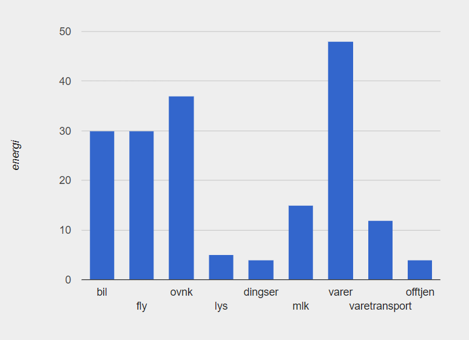

Natasha er 30 år gammel og studerer en bachelorgrad innen IT og Datasystemer på UiA. Hun opprinnelig fra Australia og har fullført en norskkurs og studiespesielisering gjennom voksenopplæring. Hun har bodd i Norge om litt over 3 år. Før hun begynte på UiA hadde hun ingen tidligere koding erfaring, men nå har hun begynte å lære seg JavaScript, HTML og CSS, i tillegg til å lære pyret til å fullføre oppgavene. Drømmen hennes er å utvikle dataspill, og bruke kreativiteten sin til å løse problemer.
Hun har ikke reiste utenfor sørlandet
Klimafotavtrykk til Natasha kan estimeres ved hjelp av kalkulasjoner gjort av David MacKay i 2015. En typisk person i et industriland er summen av bruk av fly, oppvarming og nedkjøling, lys, "dingser", utslipp fra mat, landbruk og kunstgjørdsel, varer, varetransport og offentlige tjenester. I tillegg til en kalkulasjon av bil bruk [(distanse kjørt pr dag / distanse pr liter) * 10]. Natasha kjører ca. 30km pr dag, og bilen kjører ca. 10km pr liter drivstoff. Grafen viser klimafotavtrykk av Natasha.
